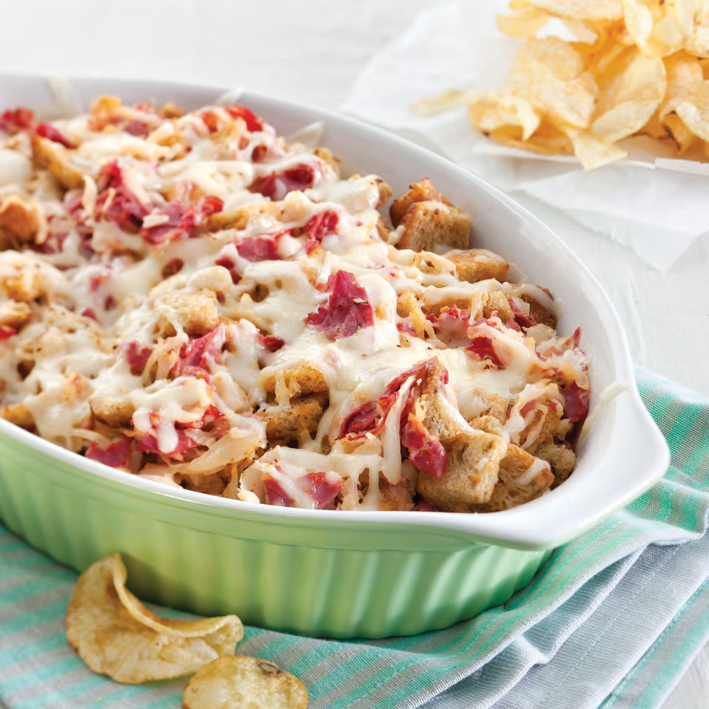

Reuben Casserole

Description
This Reuben Casserole recipe has all the layers of your favorite Reuben sandwich in casserole form! Corned beef,
sauerkraut, Swiss cheese, Thousand Island dressing and Rye bread all make this casserole taste just like the
sandwich. A St. Patrick’s Day classic!
Ingredients
- 1 pound sliced deli corned beef, coarsely chopped
- 16 ounces sauerkraut, drained and rinsed
- 1 cup Thousand Island salad dressing
- 2 1/2 cups shredded Swiss cheese
- 6 slices Rye bread, cubed
Steps
- Preheat the oven to 400°F (205°C)
- Layer corned beef on the bottom of a 9x13 baking dish.
- Make sure the sauerkraut is drained and patted dry. Sprinkle it on top of the beef
- Drizzle the dressing on top of the sauerkraut and sprinkle the Swiss cheese on top
- Arrange the diced bread on top of the casserole and lightly spray it with cooking spray so that it toasts up
nicely (or you can butter the bread).
- Bake for 20-25 minutes or until bread is toasted and cheese has melted.